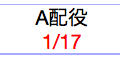

トップ画面で『村の作成』ボタンを押すと、村建て画面が表示されます。
同時に建てられる村の数には上限があります。(5〜10個)
既に上限数まで建っている場合は、いずれかの村がゲーム終了または廃村するまで新しい村は建てられません。
村建て画面で時間・オプションを指定した後『村を作成する』ボタンを押すと、村が作成されます。
指定できるオプションは以下の通りです。
GM制
チェックすると、GM(ゲームマスター)がいる村になります。
チェックしない場合、ゲーム開始までGMの役割を持つ、仮GMが設定されます。
その村で最初に入村したプレイヤーがGM/仮GMとなります。
GM/仮GM募集中の村は、人数が赤色で表示されます。

ランダムCN
ゲーム開始時に、名前(CN)とアイコンがランダムに変更されます。
使用するアイコンセットを指定することができます。(アイコン一覧)
観戦者発言
観戦者同士で会話ができます。
(ゲーム中、観戦者の発言は観戦者同士とGMにだけ見えます)
○秒ルール
生存者は、昼が開始して指定時間経過後から発言ができるようになります。
発言できない間は、残り時間表示が赤色になります

生存者ソート
プレイヤーリストが生存者(上方)・死亡者(下方)に自動で並び替えられます。
死亡者が出るたびにプレイヤーリストの位置関係が変わる(可能性がある)ため、
占い理由に位置情報を入れる意味が薄くなると思われます。

投票時間の固定を解除
夕方の時間固定を解除します。
全員の投票が終わると、残り時間に関係なく夜になります。
トリップ入村制限
HNにトリップキーがついていないと入村できません。
また、戦績が指定された数未満のトリップキーも入村できません。